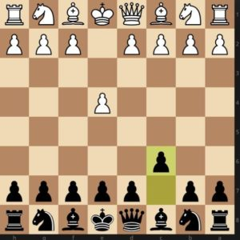

The Caro-Kann Defense is a popular chess opening for Black and enjoys the reputation of being one of the most solid responses to 1.e4.It has also been a favorite opening of World Champions throughout history such as Capablanca, Botvinnik, Petrosian and Karpov, and has seen steady growth in popularity in recent years, played by modern Super-GMs such as Anand, Adams, and Leko.
The opening has been a guest at several World Chess Championship Matches throughout history, including, for instance, the match between Garry Kasparov and Anatoly Karpov in 1987, the match between Vladimir Kramnik and Peter Leko in 2004, and the match between Vishy Anand and Magnus Carlsen in 2013. The Caro-Kann belongs to the group of semi-open chess openings for Black and occurs after the moves 1.e4 c6 (see the position below).
In contrast to the Scandinavian Defense, Black does not go for …d5 on move one. He first supports the d-pawn with the move …c6, so that if White captures on d5, Black can capture with the c-pawn and does not have to expose his queen too early. The Caro-Kann operates on similar principles to the Slav Defense and French Defense, in that the pawns will be placed primarily on 1 color (in the Caro-Kann Defense, the light-squares c6, d5, e6) and the pieces will emphasize control of the dark squares in the center (c5, d6, e5 etc.).
The Caro-Kann has often been maligned for being dry and boring,
played by those wishing to bore their opponents to death.
– IM (WGM) Jovanka Houska